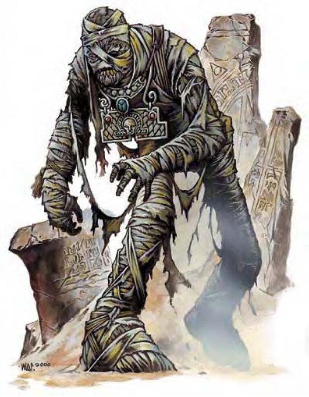

他们看起来像是已经萎缩干燥的尸体，身覆千年未洗的裹尸带。拖着似乎因为年岁而负担沉重的身躯，他们一边呻吟、一边步伐蹒跚地移动着。
通过应被遗忘的沙漠黑暗之神帮助，防腐保存后的尸体活化成为木乃伊。他们通常栖息在巨大墓穴或祠堂中，担任永恒的守墓人以消灭任何具有盗墓嫌疑的闯入者。
这些可怕生物身上通常具有标记，代表他们所服侍的恐怖神明。其他不死生物多半发出腐臭，但用以制造木乃伊的药草与药粉却让他们的味道呛辣刺鼻，闻起来就像到了一间辛辣香料仓库。
木乃伊对于入侵者的攻击毫不留情迟疑。他们永远不会试图与敌人沟通，也不会撤退。遇上木乃伊不是他死就是你亡，除非木乃伊的对手选择撤退。
木乃伊多半高5至6英尺，重约120磅。
木乃伊通晓通用语，但不常说。
| 资料栏位 | 木乃伊 (Mummy) 中型不死生物 |
| 生命骰 | 8d12+3 (55HP) |
| 先攻 | +0 |
| 速度 | 20英尺 (4格) |
| 防御等级 | 20 (+10天生)、接触10、措手不及20 |
| 基本攻击/擒抱 | +4 / +11 |
| 攻击 | 挥击+11近战 (1d6+10附加腐尸症) |
| 全力攻击 | 挥击+11近战 (1d6+10附加腐尸症) |
| 占据/触及 | 5英尺 / 5英尺 |
| 特殊攻击 | 绝望、腐尸症 |
| 特殊能力 | 伤害减免5 / ―、黑暗视觉60英尺、不死特性、易受火焰伤害 |
| 豁免 | 强韧+4、反射+2、意志+8 |
| 属性 | 力量24、敏捷10、体质―、智力6、感知14、魅力15 |
| 技能 | 躲藏+7、聆听+8、潜行+7、侦察+8 |
| 专长 | 警觉、强韧加强、健壮 |
| 环境 | 任何 |
| 组织 | 单独、看守队 (2-4) 或守卫队 (6-10) |
| 宝藏 | 标准 |
| 阵营 | 通常守序邪恶 |
| 进化 | 9-16HD (中型)；17-24HD (大型) |
| 等级修正值 | ― |
在近战时，木乃伊使用强拳攻击。即使不具备其他能力，他的力气与顽强战意就足以让他成为可畏的敌手。
绝望 (超自然)：看到木乃伊的人要通过意志检定 (DC=16)，否则就麻痹1d4轮。无论检定是否成功，24小时内都不会再受同一个木乃伊的绝望影响。豁免检定DC的调整值与魅力调整值相同。
腐尸症 (超自然)：超自然疾病――挥击、强韧检定DC=16、潜伏期1分钟；伤害1d6体质及1d6魅力。豁免检定DC的调整值与魅力调整值相同。
与一般疾病不同的是，腐尸症的效果会持续到感染者体质降为0而死亡或如下文所述被治愈为止。
腐尸症并非天然疾病，而是种很强的诅咒。若想对感染腐尸症的生物施展任何咒法系 (医疗) 法术，则需通过施法者等级检定 (DC=20)，失败法术无效。
要清除腐尸症，必须先施展“破除结界”或“移除诅咒” (每个法术均需通过施法者检定，DC=20)，之后施展医疗法术就不需再进行施法者检定，此时腐尸症就跟一般疾病一样可被魔法治愈。受感染的生物若因腐尸症而死，则会化为一阵沙尘随风而逝。